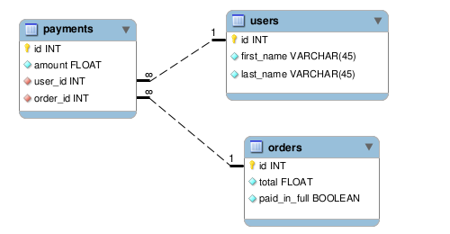
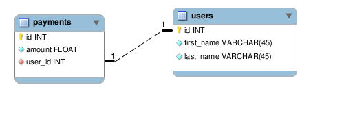
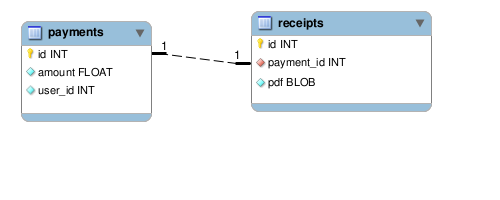
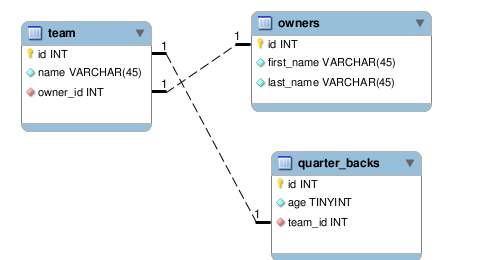
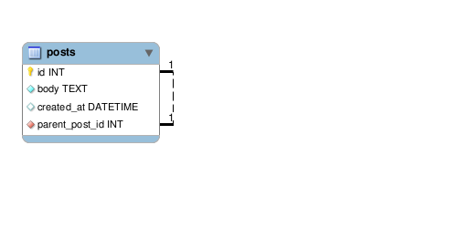

What are associations? By declaring associations on your models, you allow them to communicate with each other. These associations should match the way data in your tables relate to each other.
These are available amongst each type of association.
conditions: string/array of finder conditions
readonly: whether associated objects can be saved/destroyed
select: specify fields in the select clause
class_name: the class name of the associated model
foreign_key: name of foreign_key
Let's take a look at these options with a few different association types
Below, we specify that associated payments of an order object should not be void.
1 class Order extends ActiveRecord\Model {
2 static $has_many = array(
3 array('payments', 'conditions' => array('void = ?' => array(0)))
4 );
5 }
If you add a readonly option to your association, then the associatied object cannot be saved, although, the base object can still be saved.
1 class Payment extends ActiveRecord\Model {
2 static $belongs_to = array(
3 array('user', 'readonly' => true)
4 );
5 }
6
7 $payment = Payment::first();
8 $payment->paid = 1;
9 $payment->save(); # this will save just fine
10
11 $payment->user->first_name = 'John';
12 $payment->user->save(); # this will throw a ReadOnlyException
Sometimes you may not need all of the fields back from one of your associations (e.g. it may be a ridiculously large table) and so you can specify the particular fields you want.
1 class Payment extends ActiveRecord\Model {
2 static $belongs_to = array(
3 array('person', 'select' => 'id, first_name, last_name')
4 );
5 }
In this example payment has a one-to-one relationship with a user, but we want to access the association thru "person." Thus, we have to provide the class name of the associated model; otherwise, ActiveRecord would try to look for a "Person" class.
1 class Payment extends ActiveRecord\Model {
2 static $belongs_to = array(
3 array('person', 'class_name' => 'User')
4 );
5 }
A one-to-many relationship. You should use a pluralized form of the associated model when declaring a has_many association, unless you want to use the class_name option.
1 # one-to-many association with the model "Payment"
2 class User extends ActiveRecord\Model {
3 static $has_many = array(
4 array('payments')
5 );
6 }
7
8 $user = User::first();
9 print_r($user->payments); # => will print an array of Payment objects
10 $payment = $user->create_payment(array('paid' => 1)); # => build|create for associations.
Options (not part of common options)
limit/offset: limit the number of records
primary_key: name of the primary_key of the association (assumed to be "id")
group: GROUP BY clause
order: ORDER BY clause
through: the association used to go "through"
1 class Order extends ActiveRecord\Model {
2 static $has_many = array(
3 array('payments', 'limit' => 5),
4 array('items', 'order' => 'name asc', 'group' => 'type')
5 );
6 }
This is a convenient way to configure a many-to-many association. In this example an order is associated with users by going the its payments association.
1 class Order extends ActiveRecord\Model {
2 static $has_many = array(
3 array('payments'),
4 array('users', 'through' => 'payments')
5 );
6 }
7
8 class Payment extends ActiveRecord\Model {
9 static $belongs_to = array(
10 array('user'),
11 array('order')
12 );
13 }
14
15 class User extends ActiveRecord\Model {
16 static $has_many = array(
17 array('payments')
18 );
19 }
20
21 $order = Order::first();
22 # direct access to users
23 print_r($order->users); # will print an array of User object

This indicates a one-to-one relationship. Its difference from has_one is that the foreign key will be on the table which declares a belongs_to association. You should use a singular form of the associated model when declaring this association, unless you want to use the class_name option.
1 class Payment extends ActiveRecord\Model {
2 static $belongs_to = array(
3 array('user')
4 );
5 }
6
7 $payment = Payment::first();
8 echo $payment->user->first_name; # first_name of associated User object

Options (not part of common options)
primary_key: name of the primary_key of the association (assumed to be "id")
This indicates a one-to-one relationship. A has_one will have the foreign key on the associated table unlike belongs_to. You should use a singular form of the associated model when declaring this association, unless you want to use the class_name option.
1 class Payment extends ActiveRecord\Model {
2 static $has_one = array(
3 array('receipt')
4 );
5 }

Options (not part of common options)
primary_key: name of the primary_key of the association (assumed to be "id")
through: the association used to go "through"
A one-to-one association. In this example, an owner has a quarter_back by going through its team association.
1 class Owner extends ActiveRecord\Model {
2 static $has_one = array(
3 array('team'),
4 array('quarter_back', 'through' => 'team')
5 );
6 }
7
8 class Team extends ActiveRecord\Model {
9 static $belongs_to = array(
10 array('owner')
11 );
12
13 static $has_one = array(
14 array('quarter_back')
15 );
16 }
17
18 class QuarterBack extends ActiveRecord\Model {
19 static $belongs_to = array(
20 array('team')
21 );
22 }

Model's can declare associations to themselves. This can be helpful for table auditing, or in the example below, where a post would need to know about its parent.
1 class Post extends ActiveRecord\Model {
2 static $belongs_to = array(array('parent_post', 'class_name' => 'Post'));
3 }
